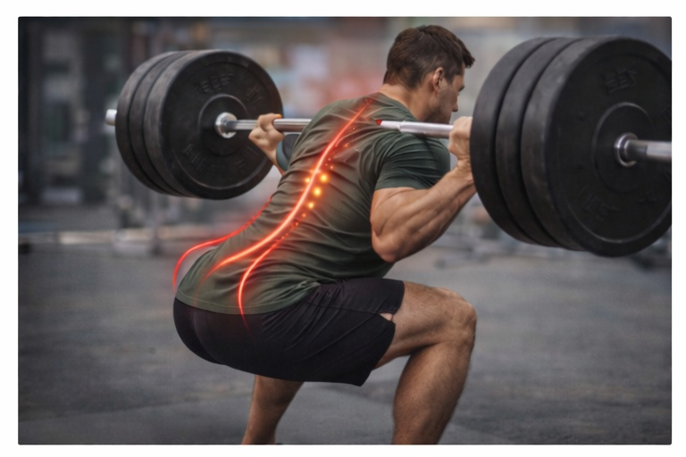
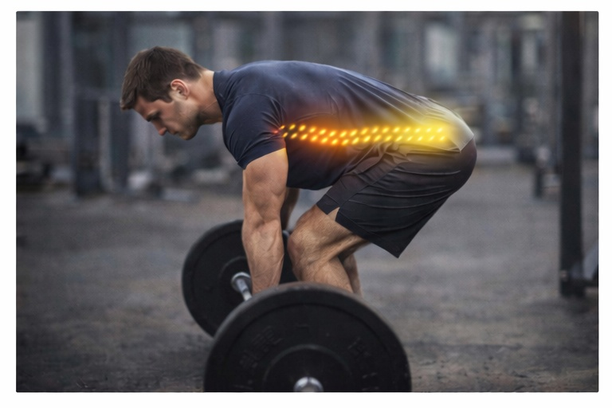

Боль в спине после тренировок
Как силовые нагрузки и ошибки техники влияют на позвоночник.
Силовые и функциональные тренировки создают высокую нагрузку на мышцы и структуры позвоночника.
Без контроля техники и восстановления риск хронической боли возрастает.
Основные причины боли
❌ Ошибки техники
Неправильное положение спины в базовых упражнениях.

Нарушение нейтрального положения повышает нагрузку на диски.
⚠️ Перегрузка
Слишком большой объём и интенсивность работы.
Отсутствие периодизации приводит к воспалению тканей.
🧠 Слабый кор
Недостаточная стабилизация позвоночника.

Глубокие мышцы защищают спину при нагрузке.
😴 Недостаток восстановления
Нарушение сна и режима отдыха.
Без отдыха ткани не успевают адаптироваться.
Другие ситуации со спиной
Коррекция нагрузки и техники тренировок помогает сохранить здоровье спины.
Записаться на консультацию